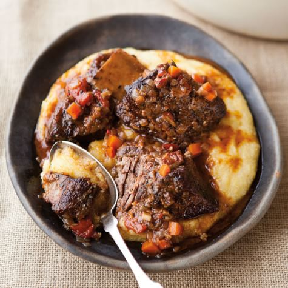

Braised Short Ribs

These slow braised short ribs are to die for and will surely be a hit among any dinner party attendees!
This wonderful recipe combines robust meaty flavors with traditional Italian cooking in a tomato wine based sauce for melt in your mouth savory sensations.
Ingredients
- 2 ½ to 3lbs bone-in, English cut short ribs
- ¼ cup extra-virgin olive oil
- 1 medium onion, chopped
- 2 ribs celery, sliced into ½ inch pieces
- 3 medium carrots, peeled, sliced into ½ inch pieces
- 2 cloves garlic, minced
- ¼ cup tomato paste
- 1 cup dry red wine
- 14oz (1 ¾ cups) tomato passata or whole canned tomatoes
- 1 cup low sodium beef stock, or more as needed
- 1 bundle fresh thyme
- 2 bay leaves
- Kosher salt and black pepper, to taste
- ¼ cup parsley, finely chopped, for garnish (optional)
Steps
- Preheat oven: Preheat oven to 350°F.
- Sear short ribs: Heat a Dutch oven or large pot over medium high-heat. Pat short ribs dry and season with salt and pepper. Add 2 tablespoons of olive oil to the pan, followed by the meat. Sear ribs about 3-5 minutes per side. Transfer ribs to a plate. Discard any excess oil from the pot so there’s only 1-2 tablespoons remaining.
- Cook soffritto: Reduce heat to medium and add remaining 2 tablespoons of oil to the pot. Add onion, season with salt and pepper, and sauté about 5 minutes, until translucent. Add the celery and carrots and season with salt and pepper. Sauté another 5 minutes or until vegetables start to soften. Add garlic and sauté about 30 seconds.
- Add tomato paste and wine: Stir in the tomato paste and cook for 5-6 minutes, stirring occasionally, or until slightly darkened in color. Deglaze the pan with the wine, scraping up any brown bits on the bottom of the pan. Increase heat to high and reduce wine by half, stirring occasionally.
- Braise: If you’re using whole canned tomatoes, puree them in the blender and then add to the pot. Season with salt. Stir in one cup of broth, thyme and bay leaves. Return the short ribs to the pot. Bring to a simmer, cover with a lid and transfer to the oven. Cook for a total of 2-3 hours or until meat is very tender, checking liquid level every 30-60 minutes. Try to maintain the liquid at about ¾ way up the short ribs, adding additional stock or water, as needed.
- Thicken sauce and serve: After the short ribs are fork tender, assess the thickness of the sauce. If the sauce is too thin for your liking, remove short ribs from pot, transfer to a plate and cover to keep warm. Heat the sauce over the stove and simmer until thickened to your desired consistency. If the sauce is already thick enough, you can skip this step. Serve with polenta or mashed potatoes if desired. Top with chopped parsley. Enjoy.